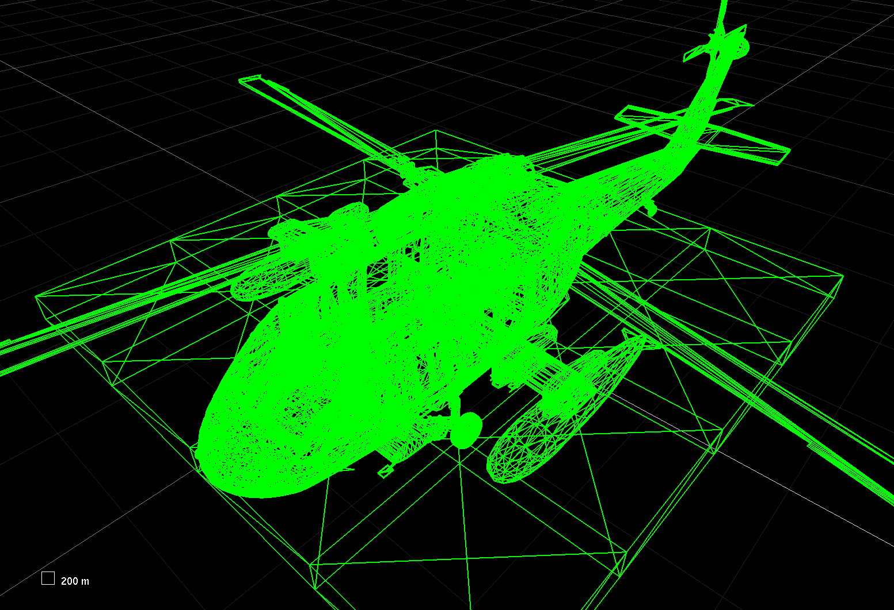

Team Interactive
Company Retro
Gustavo Reis, Ashley Prazeres, Fábio Louro, Salvador MirandaPrevious Work
SPI Monitoring
Realtime integration with Unreal Enigne 4 and Unity
Current Work
Binaural
Binaural
Binaural
Binaural
Binaural
Search for solutions to generate HRTFs from 3D mesh (head scan)
Conclusion of binaural classes refactoring and integration
Erradicated legacy custom HRIR dataset format in exchange for SOFA format
Implemented SOFA support in plugins for binaural processing with custom dataset
Improved tests coverage on modules
Binaural
Improved binaural render performance
Added doxygen documentation for SPI classes
Solutions to generate HRTF dataset from 3D mesh (head scan)
Photogrammetry
3D Scan

Digital Waveguide Meshes
Custom HRTF
Generate HRIRs
Compute HRTFs
Use those in our binaural engine